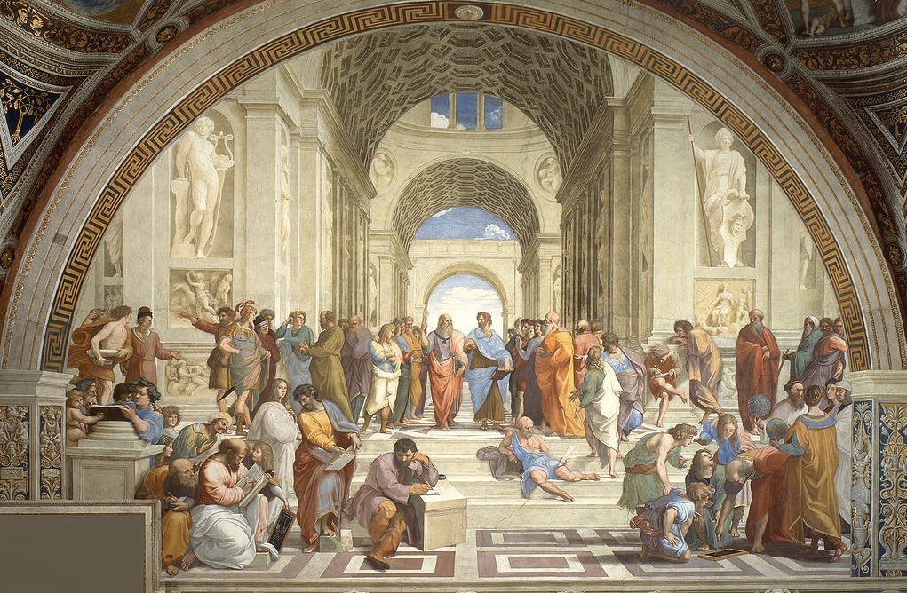

Mya Lam
Ancient Greece refers to the period of 700-480 B.C. This period is known for its art, architecture and philosophy. There were increased advances in arts, poetry and technology, including the invention of the city-state, which became a defining feature of Greek life for hundreds of years. The Greeks most important contributions to philosophy included, mathematics, astronomy and medicine. One of the key points of Ancient Greek philosophy was the role of reason and inquiry. It placed emphasis on the importance of logic, and the idea of rational observation of the natural world. Additionally, our basic ideas about geometry are due to mathematical ideas from Ancient Greek mathematicians, such as Pythagoras, Euclid and Archimedes. The first astronomical models were developed by the ancient Greeks, describing a heliocentric solar system, challenging the viewpoint at the time. Furthermore, Greek artists reached a peak of excellence, capturing the human body in a way never seen before. Sculptors were concerned with proportion and perfection, as a result, their sculptors have become the most recognized pieces of art created by any civilization. Greek architects created some of the most distinctive buildings in the entire world. Due to their attention to proportion and perspective, Greek architecture greatly influenced Roman and classical architecture, as well as the Renaissance. Due to the high value placed on reason and inquiry, the ancient Greek civilization moved towards reason rather than faith. The key values at the time included logic, reason, rational observation and scientific reasoning. These values move away from faith and religion and towards the age of reason, observation and discovery.
